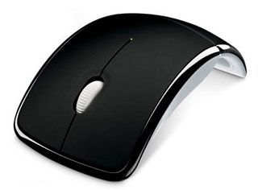

Что необходимо знать о мышах.

Эпоха шариковых мышей прошла так давно, что большинство современных пользователей при словах «шариковая мышь» с трудом могут понять, о чем идет речь.
Сейчас эпоха мышей оптических – то есть таких которые для считывания информации о перемещении используют комбинацию светодиода и оптического сенсора. Эта очень удачная конструкция, не требующая больших затрат в производстве,
а следовательно дешевая. Вместе с тем технология позволяет получить довольно высокую – до 400-600 dpi точность позиционирования.
Собрать компьютер онлайн в минске можно на сайте cooler.by.
Такие мыши распространились повсеместно. Они легкие, не требуют большого количества энергии, благодаря чему можно легко избавиться от проводов. В последние годы намечается появление еще одного класса указывающих устройств –
лазерных мышей, которые обеспечивают еще большую – до 1200dpi точность измерения и работу на любых поверхностях включая зеркала и стекло.
Для начала совершим небольшой экскурс в историю мышей.
Первая мышь была разработана в 1981 году для компьютера Xerox 8010 и стоила по тем временам около 400 $.
С появлением ос windows 95 мышь стала неотъемлимым атрибутом абсолютно всех компьютеров, и сегодня не встретишь пользователя, не знающего слова мышь.
Популярности мышей способствуют такие факторы как низкая по сравнению с другими указывающими устройствами цена и вместе с тем легкость в освоении и позиционировании.
Первые модели мышей были оптомеханическими – имели шарик, который приводил в движение решетчатые диски, соединенные с оптопарой. Последующие модели окончательно избавились от механических компонентов в конструкции.
Именно оптические мыши 2 и 3 поколений и составляют сегодня абсолютное большинство на мировом рынке.
Перейдем к внешнему строению мыши.
Классическая мышь имеет 2 основные кнопки и колесико прокрутки. Разные модели могут иметь от 1 до 28 дополнительных кнопок и колес прокрутки.
В последние несколько лет стали очень популярны «бесхвостые», то есть беспроводные мыши с автономным источником питания и радиомодулем для связи с ПК.
Все современные операционные системы не требуют для мышей никаких дополнительных драйверов и поддерживают их как основное необходимое оборудование наравне с клавиатурой.
За годы производства создано огромное количество разнообразных модификаций мышей.
Созданы мыши со множеством кнопок, с индукторами вместо батареек, мыши для геймеров, мыши для художников, мыши с акселерометрами для 3D навигации и даже гибриды мыши с клавиатурой.
Так что идея, разработанная когда то Стенфордскоим Исследовательским Институтом актуальна по сей день и без неё мы просто не можем представить современный компьютер.
Следующая статья:
Выбор звуковой карты.